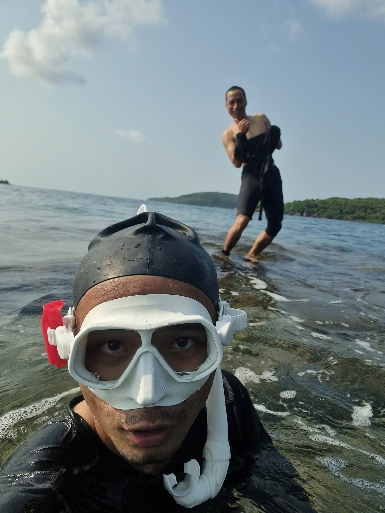
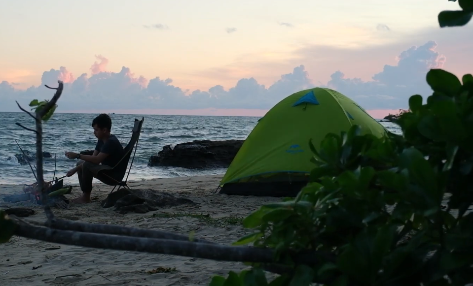
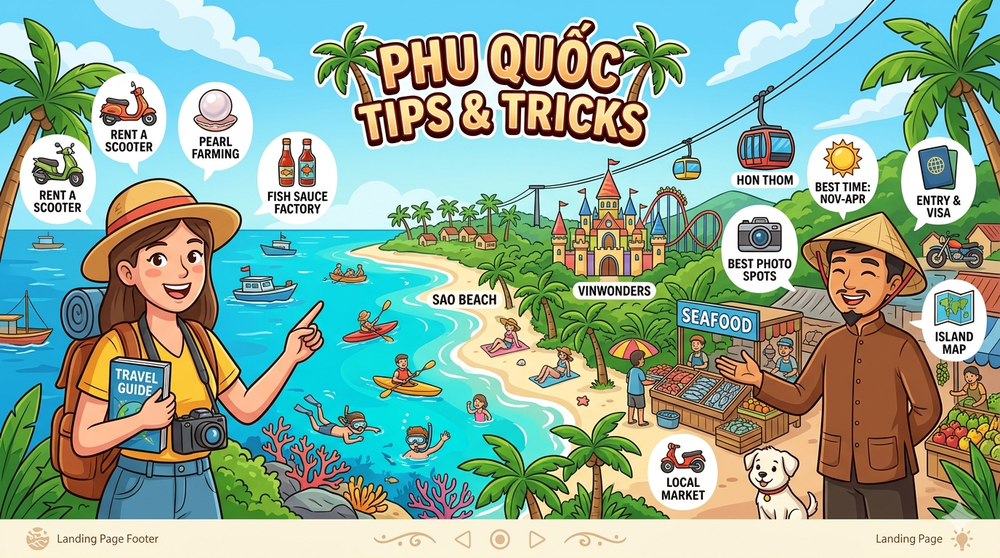
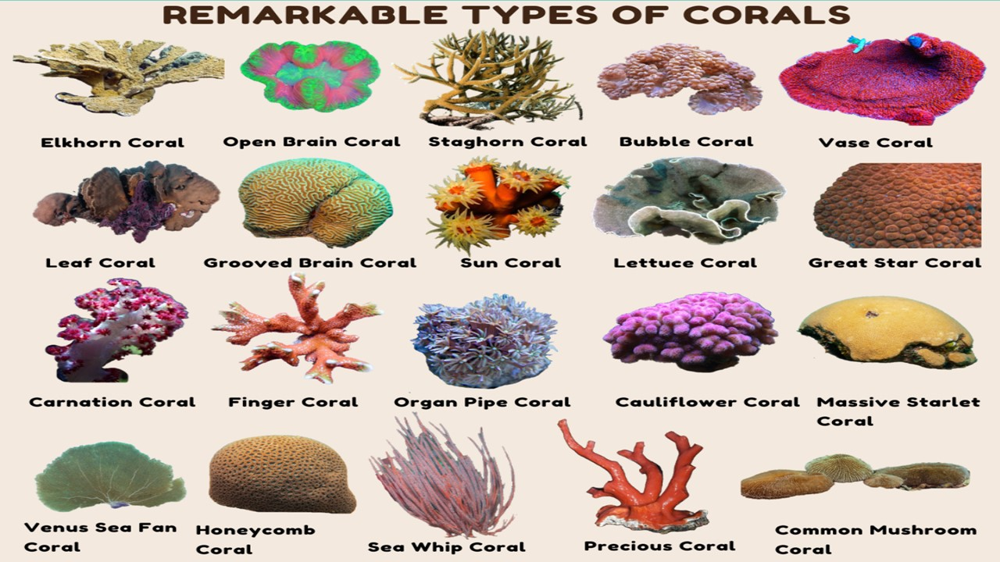

"Billy
and
Friend"
adventures
The private guide
search nhanh: snorkeling, diving, hiking, camping, contact
Xin chào! I am Bill, Billy the Bill .Tôi sinh ra và lớn lên ở vùng đất Phú Quốc thân yêu này, từ bé theo cha đánh bắt trên từng ngóc ngách của rạn san hô ở Phú Quốc. Mỗi ngày khi nhìn thấy những nhà làm tour thiếu ý thức đã làm tổn hại đến vẻ đẹp tự nhiên này… tôi tin rằng chúng ta không cần thiết phải đánh đổi giữa du lịch và môi trường… Bạn có muốn cùng tôi..
Tinh thần cốt lõi của Billy and Friend Adventures là: khám phá có trách nhiệm, không để lại dấu vết, và giữ nguyên vẻ đẹp tự nhiên của Phú Quốc cho chính bạn và cho những người đến sau. bạn vui lòng click vào chính sách:






Chọn ngày còn trống để nhắn Billy and Friend Adventures kiểm tra và giữ lịch tour cho bạn.

" xin chào bạn đã đến với Billy và những người bạn " chúng tôi là một đội , và chúng tôi chưa bao giờ là một cá nhân , hãy để chúng ta như một gia đình, gia đình vui vẻ"
Billy and Friend Adventures
"Some laugh because we are different.
We smile because we choose not to be the same."
Choose a slower, more personal way to discover Phú Quốc through coral-friendly snorkeling, private diving, quiet hiking routes, island camping, proposal getaways, and practical coral knowledge shaped by a Leave no trace mindset.
Private coral-friendly snorkeling with a local guide and slower, cleaner travel.
Read moreA calm private diving experience for guests who want deeper island water stories.
Read moreQuiet local routes for guests who want to see another side of Phú Quốc.
Read moreSimple outdoor time focused on nature, quiet places, and Leave no trace.
Read moreA quiet private setup for couples visiting the island and planning a memory.
Read moreSimple coral notes to help guests understand, respect, and protect reef life.
Read moreLeave no trace is the travel promise behind Billy and Friend Adventures: enjoy Phú Quốc without damaging coral reefs, beaches, forest paths, or the quiet local places that make the island worth visiting.
Guests are guided to move slowly, avoid touching coral, reduce waste, respect local routes, and leave each place as natural as possible for the people who arrive after them.
Find Billy and Friend Adventures on the contact platform you already use. Direct links will be mapped after the official channels are ready.